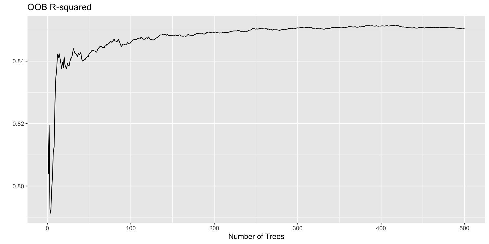
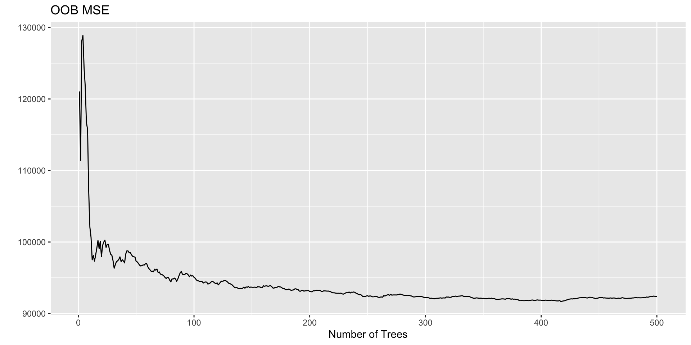
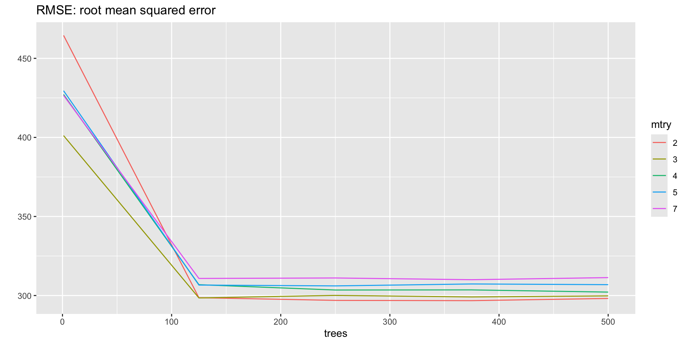
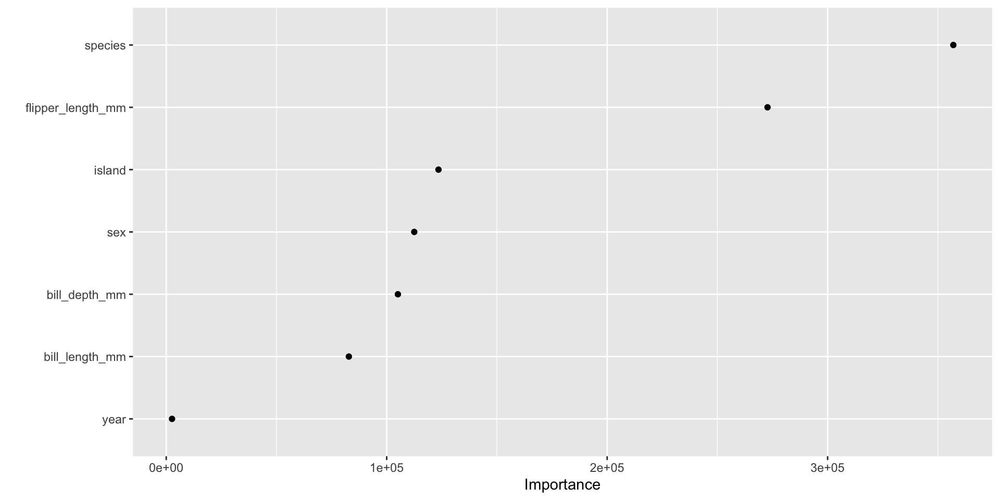
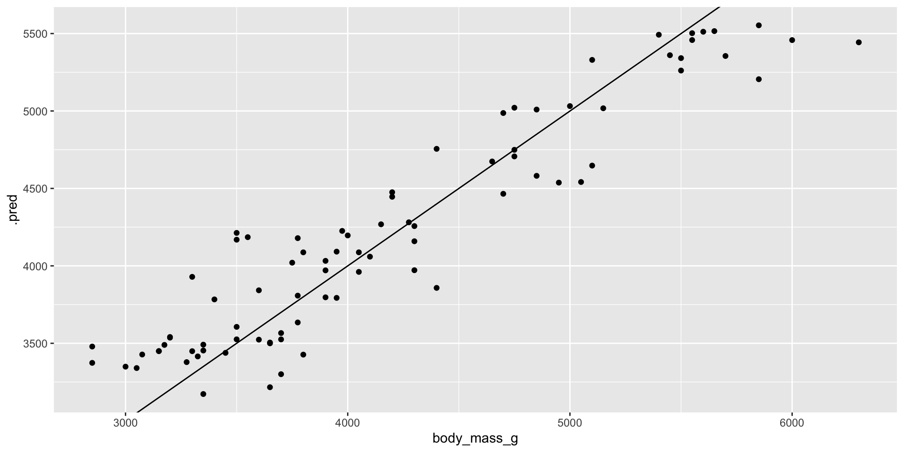

Bagging and Random Forests
November 4 + 6, 2024
Agenda 11/04/2024
- Redux - CART
- bagging process
- bagging error rate (OOB error)
tidymodels syntax
- partition the data
- build a recipe
- select a model
- create a workflow
- fit the model
- validate the model
Random Forests
Random forests are an ensemble learning method for classification (and regression) that operate by constructing a multitude of decision trees at training time and outputting the class that is the mode of the classes output by individual trees – Wikipedia
Why a forest instead of a tree?
Trees suffer from very high variance
Two datasets will provide extremely different trees
To reduce variability, fit many trees and aggregate the predictions.
No longer reporting the tree structure, now reporting the predicted values (with hopes that predictions from one dataset will be similar to predictions from another dataset).
Bagging
Bagging = Bootstrap Aggregating.
- multiple models aggregate together will produce a smoother model fit and better balance between
- bias in the fit
- variance in the fit.
Bagging can be applied to any classifier to reduce variability.
Recall that the variance of the sample mean is variance of data / n. So we’ve seen the idea that averaging an outcome gives reduced variability.
Bagging Models
Bagging Trees

Algorithm: Bagging Forest
- Resample (bootstrap) cases (observational units, not variables).
- Build a tree on each new set of (bootstrapped) training observations.
- Average (regression) or majority vote (classification).
- Note that for every bootstrap sample, approximately 2/3 of the observations will be chosen and 1/3 of them will not be chosen.
Observations not in a given tree
P(observation \(i\) is not in the bootstrap sample) = \(\bigg(1 - \frac{1}{n} \bigg)^n\)
\[\lim_{n \rightarrow \infty} \bigg(1 - \frac{1}{n} \bigg)^n = \frac{1}{e} \approx \frac{1}{3}\]
OOB Error
Out of Bag
with bagging, there is no need for cross-validation or a separate test set to get an unbiased estimate of the test set error. It is estimated internally for free!!!
Each tree is constructed using a different bootstrap sample
Put all of the cases left out in the construction of the \(b^{th}\) tree down the \(b^{th}\) tree to get a classification.
At the end of the run,
- take \(j\) to be the class that got most of the votes every time case \(i\) was oob.
- The proportion of times that \(j\) is not equal to the true class averaged over all cases is the oob error.
OOB Prediction
Let the OOB prediction for the \(i^{th}\) observation to be \(\hat{y}_{(-i)}\)
\[\begin{eqnarray*} \mbox{OOB}_{\mbox{error}} &=& \frac{1}{n} \sum_{i=1}^n \textrm{I} (y_i \ne \hat{y}_{(-i)}) \ \ \ \ \ \ \ \ \mbox{classification}\\ \mbox{OOB}_{\mbox{error}} &=& \frac{1}{n} \sum_{i=1}^n (y_i - \hat{y}_{(-i)})^2 \ \ \ \ \ \ \ \ \mbox{regression}\\ \end{eqnarray*}\]
| obs | tree1 | tree2 | tree3 | tree4 | \(\cdots\) | tree100 | average |
|---|---|---|---|---|---|---|---|
| 1 | X | X | \(\sum(pred)/38\) | ||||
| 2 | X | \(\sum(pred)/30\) | |||||
| 3 | X | X | \(\sum(pred)/33\) | ||||
| 4 | X | \(\sum(pred)/32\) | |||||
| 5 | X | \(\sum(pred)/39\) | |||||
| 6 | X | X | \(\sum(pred)/29\) | ||||
| 7 | X | \(\sum(pred)/29\) | |||||
| 8 | X | X | X | \(\sum(pred)/31\) | |||
| 9 | X | \(\sum(pred)/36\) |
Bagging example w defaults
penguin_bag_recipe <-
recipe(body_mass_g ~ . ,
data = penguin_train) |>
step_unknown(sex, new_level = "unknown") |>
step_mutate(year = as.factor(year)) |>
step_naomit(all_predictors(), body_mass_g)
penguin_bag_recipe── Recipe ──────────────────────────────────────────────────────────────────────── Inputs Number of variables by roleoutcome: 1
predictor: 7── Operations • Unknown factor level assignment for: sex• Variable mutation for: as.factor(year)• Removing rows with NA values in: all_predictors() and body_mass_gnum_trees <- 500
penguin_bag <- rand_forest(mtry = 7,
trees = num_trees) |>
set_engine("randomForest", oob.error = TRUE) |>
set_mode("regression")
penguin_bagRandom Forest Model Specification (regression)
Main Arguments:
mtry = 7
trees = num_trees
Engine-Specific Arguments:
oob.error = TRUE
Computational engine: randomForest penguin_bag_wflow <- workflow() |>
add_model(penguin_bag) |>
add_recipe(penguin_bag_recipe)
penguin_bag_wflow══ Workflow ════════════════════════════════════════════════════════════════════
Preprocessor: Recipe
Model: rand_forest()
── Preprocessor ────────────────────────────────────────────────────────────────
3 Recipe Steps
• step_unknown()
• step_mutate()
• step_naomit()
── Model ───────────────────────────────────────────────────────────────────────
Random Forest Model Specification (regression)
Main Arguments:
mtry = 7
trees = num_trees
Engine-Specific Arguments:
oob.error = TRUE
Computational engine: randomForest penguin_bag_fit <-
penguin_bag_wflow |>
fit(data = penguin_train)
penguin_bag_fit ══ Workflow [trained] ══════════════════════════════════════════════════════════
Preprocessor: Recipe
Model: rand_forest()
── Preprocessor ────────────────────────────────────────────────────────────────
3 Recipe Steps
• step_unknown()
• step_mutate()
• step_naomit()
── Model ───────────────────────────────────────────────────────────────────────
Call:
randomForest(x = maybe_data_frame(x), y = y, ntree = ~num_trees, mtry = min_cols(~7, x), oob.error = ~TRUE)
Type of random forest: regression
Number of trees: 500
No. of variables tried at each split: 7
Mean of squared residuals: 92247.19
% Var explained: 85.06Fit again
══ Workflow [trained] ══════════════════════════════════════════════════════════
Preprocessor: Recipe
Model: rand_forest()
── Preprocessor ────────────────────────────────────────────────────────────────
3 Recipe Steps
• step_unknown()
• step_mutate()
• step_naomit()
── Model ───────────────────────────────────────────────────────────────────────
Call:
randomForest(x = maybe_data_frame(x), y = y, ntree = ~num_trees, mtry = min_cols(~7, x), oob.error = ~TRUE)
Type of random forest: regression
Number of trees: 500
No. of variables tried at each split: 7
Mean of squared residuals: 92405.61
% Var explained: 85.03Plotting the OOB (not tidy)
rsq <- penguin_bag_fit |>
extract_fit_parsnip() |>
pluck("fit") |>
pluck("rsq")
data.frame(
trees = 1:num_trees,
rsq = rsq) |>
ggplot() +
geom_line(
aes(x = trees, y = rsq)) +
ylab("") +
xlab("Number of Trees") +
ggtitle("OOB R-squared")
MSE <- penguin_bag_fit |>
extract_fit_parsnip() |>
pluck("fit") |>
pluck("mse")
data.frame(
trees = 1:num_trees,
MSE = MSE) |>
ggplot() +
geom_line(
aes(x = trees, y = MSE)) +
ylab("") +
xlab("Number of Trees") +
ggtitle("OOB MSE")
Agenda 11/06/24
- Random Forests
- Example
Random Forests
Many trees
- bootstrap the data before building each tree
- for best split look only at a random \(m\) variables (different \(m\) variables per split)
Tuning: look at OOB predictions – either average or majority vote
Testing: test data will be (average or majority vote) prediction for all the trees.
Algorithm: Random Forest
- Bootstrap sample from the training set.
- Grow an un-pruned tree on the bootstrap sample.
- At each split, select \(m\) variables and determine the best split using only the \(m\) predictors.
- Do not prune the tree. Save the tree as is!
- Repeat steps 1-2 for many many trees.
- For each tree grown on a bootstrap sample, predict the OOB samples. For each tree grown, \(~1/3\) of the training samples won’t be in the bootstrap sample – those are called out of bootstrap (OOB) samples. OOB samples can be used as test data to estimate the error rate of the entire forest.
- Combine the OOB predictions to create the “out-of-bag” error rate (either majority vote or average of predictions / class probabilities).
- All trees together represent the model that is used for new predictions (either majority vote or average).
Overall misclassification rate
The error rate (for classification forest) is: \[\frac{\# \mbox{ misclassificiations}}{n}\]
The prediction of an observation come in two steps. First, an observation is run down a tree until it gets to a terminal node. The majority class in that terminal node (from the training observations) provides the class for the prediction from that tree. Second, the observation goes down the relevant trees, each providing a class, and the final prediction of the observation is given by the majority class across the trees.
Each observation will get one prediction. If the predicted class is different from the observed class, the point is considered to be misclassified.
Keep in mind that the trees and forests that will be used are different depending on whether the error rate is calculated under OOB, CV, training, or testing scenarios.
Variable Importance
importance = decrease in node impurity resulting from splits over that variable, averaged over all trees.
For each tree, the prediction error on the out-of-bag portion of the data is recorded (error rate for classification, MSE for regression).
Keep the set of trees, and permute the \(j^{th}\) variable and recalculate the oob prediction error.
The difference between the two oob errors are averaged over all trees (for the \(j^{th}\) variable) to give the importance for the \(j^{th}\) variable.
RF technical details
unfortunately, tidymodels currently does not have an OOB option for model tuning (e.g., to find
mtry)unlike
num_trees,mtryis not calculated “as you go along”cross validation will be used to find the optimal value of
mtry
RF example w CV tuning
penguin_rf_recipe <-
recipe(body_mass_g ~ . ,
data = penguin_train) |>
step_unknown(sex, new_level = "unknown") |>
step_mutate(year = as.factor(year))
penguin_rf_recipe── Recipe ──────────────────────────────────────────────────────────────────────── Inputs Number of variables by roleoutcome: 1
predictor: 7── Operations • Unknown factor level assignment for: sex• Variable mutation for: as.factor(year)penguin_rf <- rand_forest(mtry = tune(),
trees = tune()) |>
set_engine("ranger", importance = "permutation") |>
set_mode("regression")
penguin_rfRandom Forest Model Specification (regression)
Main Arguments:
mtry = tune()
trees = tune()
Engine-Specific Arguments:
importance = permutation
Computational engine: ranger penguin_rf_wflow <- workflow() |>
add_model(penguin_rf) |>
add_recipe(penguin_rf_recipe)
penguin_rf_wflow══ Workflow ════════════════════════════════════════════════════════════════════
Preprocessor: Recipe
Model: rand_forest()
── Preprocessor ────────────────────────────────────────────────────────────────
2 Recipe Steps
• step_unknown()
• step_mutate()
── Model ───────────────────────────────────────────────────────────────────────
Random Forest Model Specification (regression)
Main Arguments:
mtry = tune()
trees = tune()
Engine-Specific Arguments:
importance = permutation
Computational engine: ranger set.seed(234)
penguin_folds <- vfold_cv(penguin_train,
v = 4)penguin_grid <- grid_regular(mtry(range = c(2,7)),
trees(range = c(1,500)), levels = 5)
penguin_grid# A tibble: 25 × 2
mtry trees
<int> <int>
1 2 1
2 3 1
3 4 1
4 5 1
5 7 1
6 2 125
7 3 125
8 4 125
9 5 125
10 7 125
# ℹ 15 more rowspenguin_rf_tune <-
penguin_rf_wflow |>
tune_grid(resamples = penguin_folds,
grid = penguin_grid)
penguin_rf_tune # Tuning results
# 4-fold cross-validation
# A tibble: 4 × 4
splits id .metrics .notes
<list> <chr> <list> <list>
1 <split [186/63]> Fold1 <tibble [50 × 6]> <tibble [0 × 3]>
2 <split [187/62]> Fold2 <tibble [50 × 6]> <tibble [0 × 3]>
3 <split [187/62]> Fold3 <tibble [50 × 6]> <tibble [0 × 3]>
4 <split [187/62]> Fold4 <tibble [50 × 6]> <tibble [0 × 3]>RF model output
penguin_rf_tune |>
collect_metrics() |>
filter(.metric == "rmse") |>
mutate(mtry = as.factor(mtry)) |>
ggplot() +
geom_line(aes(x = trees, y = mean, color = mtry)) +
labs(title = "RMSE: root mean squared error", y = "")
RF Final model
penguin_rf_best <- finalize_model(
penguin_rf,
select_best(penguin_rf_tune, metric = "rmse"))
penguin_rf_bestRandom Forest Model Specification (regression)
Main Arguments:
mtry = 2
trees = 375
Engine-Specific Arguments:
importance = permutation
Computational engine: ranger penguin_rf_final <-
workflow() |>
add_model(penguin_rf_best) |>
add_recipe(penguin_rf_recipe) |>
fit(data = penguin_train)RF Final model
penguin_rf_final══ Workflow [trained] ══════════════════════════════════════════════════════════
Preprocessor: Recipe
Model: rand_forest()
── Preprocessor ────────────────────────────────────────────────────────────────
2 Recipe Steps
• step_unknown()
• step_mutate()
── Model ───────────────────────────────────────────────────────────────────────
Ranger result
Call:
ranger::ranger(x = maybe_data_frame(x), y = y, mtry = min_cols(~2L, x), num.trees = ~375L, importance = ~"permutation", num.threads = 1, verbose = FALSE, seed = sample.int(10^5, 1))
Type: Regression
Number of trees: 375
Sample size: 249
Number of independent variables: 7
Mtry: 2
Target node size: 5
Variable importance mode: permutation
Splitrule: variance
OOB prediction error (MSE): 84149.09
R squared (OOB): 0.8634591 VIP
library(vip)
penguin_rf_final |>
extract_fit_parsnip() |>
vip(geom = "point")
Test predictions
penguin_rf_final |>
predict(new_data = penguin_test) |>
cbind(penguin_test) |>
ggplot() +
geom_point(aes(x = body_mass_g, y = .pred)) +
geom_abline(intercept = 0, slope = 1)
Model choices
- explanatory variable choice
- number of explanatory variables
- functions/transformation of explanatory
- transformation of response
- response: continuous vs. categorical
- how missing data is dealt with
- train/test split (
set.seed)
- train/test proportion
- type of classification model
- use of cost complexity / parameter
- majority / average prob (tree error rate)
- accuracy vs sensitivity vs specificity
- \(k\) (\(k\)-NN)
- distance measure
- V (CV)
- CV
set.seed - \(\alpha\) prune
- maxdepth prune
- prune or not
- gini / entropy (split)
- # trees / # BS samples
- grid search etc. for tuning
- value(s) of
mtry - OOB vs CV for tuning
Bias-Variance Tradeoff

Reflecting on Model Building

Reflecting on Model Building

Reflecting on Model Building